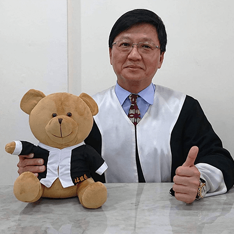

曾泰源 律師
EDUCATION
- 中興大學法律系畢業
- 文化大學法學碩士
EXPERIENCE
- 司法官特考、律師高考及格
- 司法官訓練所第二十七期結業
- 臺灣花蓮地方檢察署檢察官
- 花蓮律師公會理事長
- 中華民國律師公會全國聯合會理事
張秉正 律師
EDUCATION
- 東吳大學法律學士
- 海洋大學海洋法律研究所法學碩士
- 文化大學博士候選
EXPERIENCE
- 大漢技術學院法律兼任講師
- 國立空中大學法律兼任講師、國立東華大學法律兼任講師
- 花蓮縣政府民眾法律扶助顧問、花蓮縣醫事審議委員
- 花蓮縣教師申訴評議委員、國防部海軍總司令國賠審議委員
- 花蓮縣政府訴願審議委員、花蓮縣政府國賠審議委員
- 花蓮縣政府醫事審議委員、消基會花東分會委員
CURRENT POSITION
- 張秉正律師事務所主持律師
- 中華民國仲裁協會仲裁人
- 國立東華大學法律兼任講師
- 花蓮縣政府民眾法律扶助顧問

林國泰 律師
EDUCATION
- 輔仁大學法律系司法組畢業、
- 國立東華大學財經法律研究所大陸法制組碩士
EXPERIENCE
- 曾任職永然聯合法律事務所、
- 永然文化出版股份有限公司企畫部主任、
- 「法律與你」雜誌法律專欄作者；
- 司法官特考、律師高考雙榜及格、專利代理人檢覈及格
- 司法官訓練所第三十四期結業、台灣花蓮地方法院法官
- 花蓮律師公會理事長、臺灣律師懲戒委員會委員長、
- 中華民國律師公會全國聯合會副理事長（第十屆第三任）
- 中華人權協會東台灣人權論壇主任委員、
- 中華民國律師公會全國聯合會107年度優秀公益律師
CURRENT POSITION
- 中華民國律師公會全國聯合會理事（第十一屆）
- 財團法人法律扶助基金會花蓮分會會長
- 門諾基金會常務董事
- 花蓮縣政府訴願審議委員
洪珮瑜 律師
EDUCATION
- 台北大學法律學士
EXPERIENCE
- 桃園地方法院法官助理
- 花蓮地方法院法官助理
- 花蓮縣警察局法律諮詢委員會委員
劉彥廷 律師
EDUCATION
- 輔仁大學財經法律系畢業
EXPERIENCE
- 臺灣臺北地方法院法官助理
吳育胤 律師
EDUCATION
- 臺灣大學法律學系法學組畢業
- 臺灣大學法學碩士
EXPERIENCE
- 國立東華大學兼任講師
- 國立空中大學兼任講師
CURRENT POSITION
- 中華民國律師公會全國聯合會副祕書長
- 黎明教養院服務使用者權益保障委任會委員
- 花蓮高爾夫球場法律顧問

李佳怡 律師
EDUCATION
- 臺北大學法律學系司法組畢業
EXPERIENCE
- 律師高考（勞動法組）及格